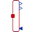

GenerationOfFMUsExample to demonstrate variants to generate FMUs (Functional Mock-up Units) |
|
Diagram
{kind=link}
Information
This information is part of the Modelica Standard Library maintained by the Modelica Association.
This example demonstrates how to generate an input/output block (e.g. in form of an FMU - Functional Mock-up Unit) from various HeatTransfer components. The goal is to export such an input/output block from Modelica and import it in another modeling environment. The essential issue is that before exporting it must be known in which way the component is utilized in the target environment. Depending on the target usage, different flange variables need to be in the interface with either input or output causality. Note, this example model can be used to test the FMU export/import of a Modelica tool. Just export the components marked in the icons as "toFMU" as FMUs and import them back. The models should then still work and give the same results as a pure Modelica model.
Connecting two masses
The upper part (DirectCapacity, InverseCapacity)
demonstrates how to export two heat capacitors and connect them
together in a target system. This requires that one of the capacitors
(here: DirectCapacity)
is defined to have states and the temperature and
derivative of temperature are provided in the interface.
The other capacitor (here: InverseCapacity) requires heat flow according
to the provided input temperature and derivative of temperature.
Connecting a conduction element that needs only temperature
The lower part (Conductor) demonstrates how to export a conduction element
that needs only temperatures for its conduction law and connect this
conduction law in a target system between two capacitors.
Components (9)
| sine1 |
Type: Sine |
|
|---|---|---|
| directCapacity |
Type: DirectCapacity |
|
| inverseCapacity |
Type: InverseCapacity |
|
| conductor |
Type: Conduction |
|
| capacitor3a |
Type: HeatCapacitor |
|
| heatFlow3 |
Type: PrescribedHeatFlow |
|
|  | heatFlowToTemperature3a | |
| capacitor3b |
Type: HeatCapacitor |
|
| heatFlowToTemperature3b |